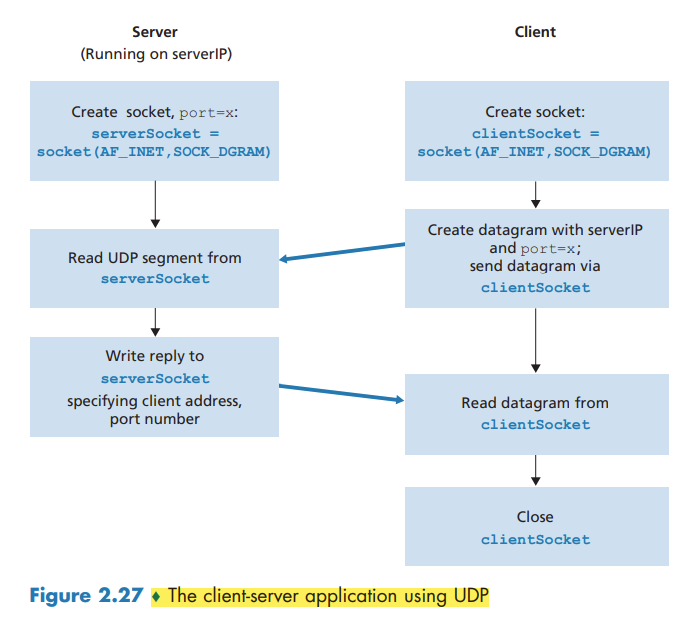
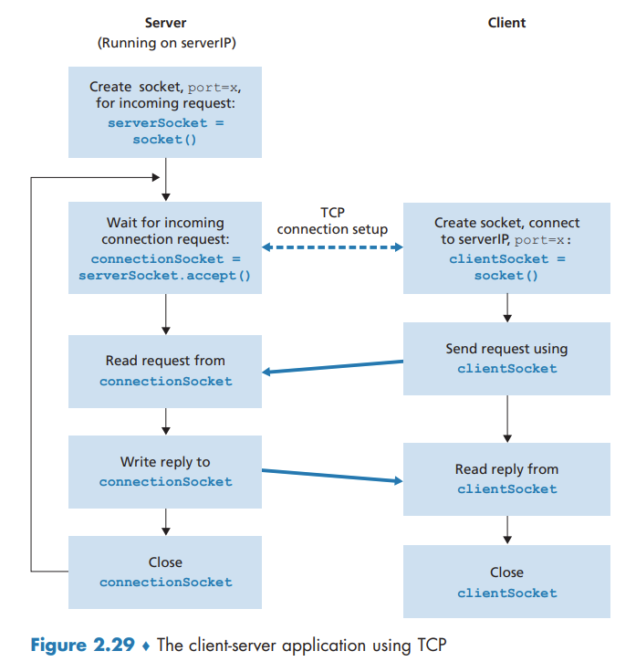
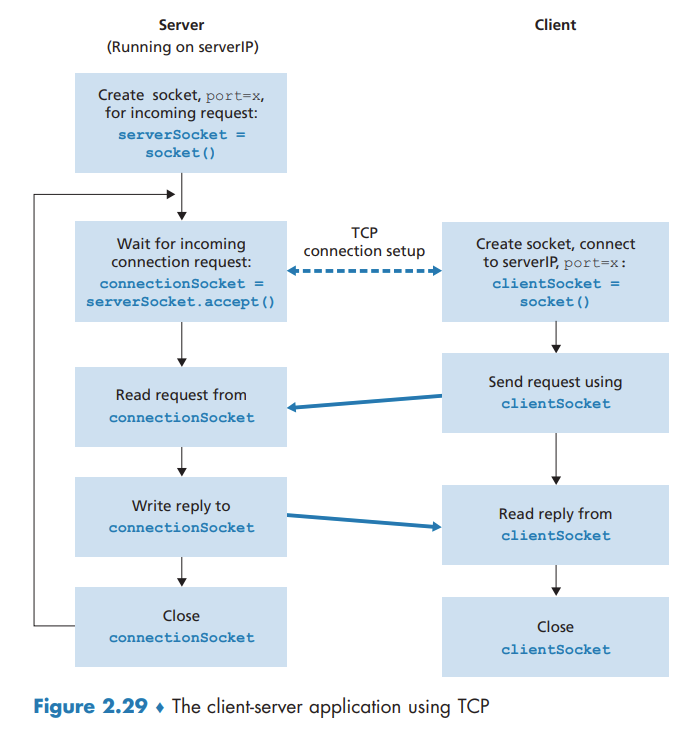

Socket Programming Creating Network Applications
Socket Programming: Creating Network Applications
Socket Programming with UDP
By including the destination IP address in the packet, the routers in the Internet will be able to route the packet through the Internet to the destination host. But because a host may be running many network application processes, each with one or more sockets, it is also necessary to identify the particular socket in the destination host. When a socket is created, an identifier, called a port number, is assigned to it.

Socket Programming with TCP
They first need to handshake and establish a TCP connection. When creating the TCP connection, we associate with it the client socket address (IP address and port number) and the server socket address (IP address and port number).
When the server “hears†the knocking, it creates a new door—more precisely, a new socket that is dedicated to that particular client.
 
